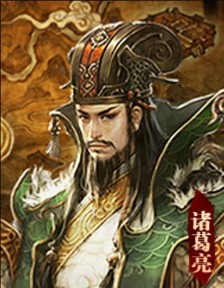
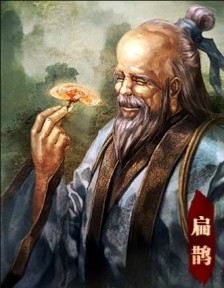
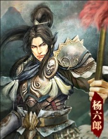
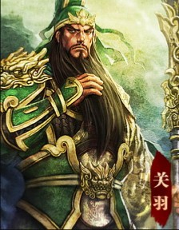
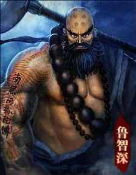

prev
next

小乔国色天香
小乔，三国时期的主要女性人物之一。在三国时归属吴国，国色流离、资貌绝伦，是当时有名的东吴美女。

潘安花样美男
潘安，西晋文学家，本名潘岳。中国古代最著名的美男子之首、"金谷二十四友"之首。

朱元璋明太祖
朱元璋，明王朝的开国皇帝，建立了全国统一的封建政权。

吕雉吕后
吕雉，西汉开国皇帝高祖刘邦的原配夫人，中国历史上第一位掌权的女性统治者。
- 
诸葛亮卧龙
诸葛亮，蜀汉丞相，三国时期杰出的政治家、战略家、发明家、军事家。

李师师青楼歌妓
李师师，北宋末年色艺双绝的名妓，其事迹多见于野史，笔记小说。据传曾深受宋徽宗喜爱。

陈圆圆乱世红颜
陈圆圆，名沅，明末清初苏州名姬，浙江金华人氏。"容辞闲雅，额秀頣丰"，有名士大家风度。
- 
扁鹊神医
扁鹊精于内、外、妇、儿、五官等科，应用针灸、按摩、汤药、热熨等法治疗疾病，被尊为医祖。

西施西子
西施，名夷光，春秋时间越国人，今浙江诸暨市城关苎萝村。同范蠡同卒于陶（定陶）。
- 
杨延昭天狼星
杨延昭是北宋抗辽大将杨业的长子，自幼就受到其父抵抗契丹、收复失地的思想影响。
- 
关羽武圣
关羽，字云长，本字长生，河东解县人（今山西省运城市），东汉末年三国时期刘备的重要将领。
- 
鲁智深花和尚
鲁智深，梁山泊第十三位好汉，绰号花和尚。因为见郑屠欺侮金翠莲父女，三拳打死了镇关西。

赢政秦始皇
秦始皇，赢姓，赵氏，名政，秦庄襄王之子。秦始皇22岁时，在雍城举行国君成人加冕仪式。开始"亲理朝政"。

赵匡胤宋太祖
赵匡胤，中国北宋王朝的建立者，庙号太祖，汉族，涿州（今河北）人。出身军人家庭。高祖赵眺，祖父赵敬。